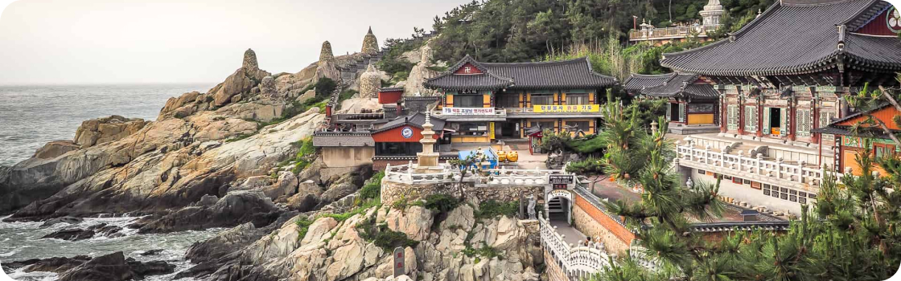

Busan, a estrela em ascensão da Coreia do Sul, oferece de tudo, desde
churrascarias de primeira linha até tradicionais barracas de comida de
rua. Aqui, exploramos a segunda cidade da Coreia do Sul e descobrimos
as suas ofertas culinárias.
PARA OS AMANTES DE HISTÓRIA
Descubra 3 destinos imperdíveis em Busan
As atrações de Busan vão desde templos budistas centenários que
pontilham as montanhas e o litoral da cidade até praias imaculadas com
águas cristalinas. Esta cidade litorânea tem muitas coisas para fazer
o ano todo - as famílias podem passar o tempo em um aquário à
beira-mar, os compradores podem explorar bairros vibrantes e os
amantes da natureza podem desfrutar de longas caminhadas até mirantes
panorâmicos. Os santuários budistas que pontilham a costa e as
montanhas de Busan têm uma arquitetura impressionante que irá encantar
os fotógrafos.

1.Templo Haedong Yonggungsa
O Templo Haedong Yonggungsa é um templo budista localizado no
extremo nordeste de Busan. Construído em 1376, é um dos poucos
templos na Coreia construídos à beira-mar – você pode desfrutar de
vistas do Mar do Leste de um lado e de belas montanhas do outro.
Bom para:
História
2.Templo Beomeo-sa
O Templo Beomeo-sa é um dos maiores santuários da Coreia do Sul. Ele
está localizado no alto da borda leste da montanha Geumjeongsa e
fica distante da agitação da cidade. O Daeungjeon Hall do templo é
um exemplo bem preservado da arquitetura da Dinastia Joseon.
Bom para:
História
3.Parque Yongdusan
O Parque Yongdusan, localizado no centro de Busan, alguns dos
monumentos mais importantes da cidade. Você pode ver vistas
espetaculares do topo da Torre Busan, de 120 metros de altura. O
parque tem 2 museus – confira os instrumentos musicais tradicionais
no Museum of World Folk Instruments e mais de 80 veleiros coreanos
no Exhibition Hall of World Model Boats.
Bom para:
Casais
Famílias
Orçamento
As melhores coisas para fazer em Busan mostram a reputação da cidade
como um importante porto marítimo na Ásia. Frequentemente vista como a
essência da Coreia do Sul, você experimentará uma atmosfera única em
termos de diversidade étnica e cultural, já que a cidade recebe um
público cosmopolita o ano todo.